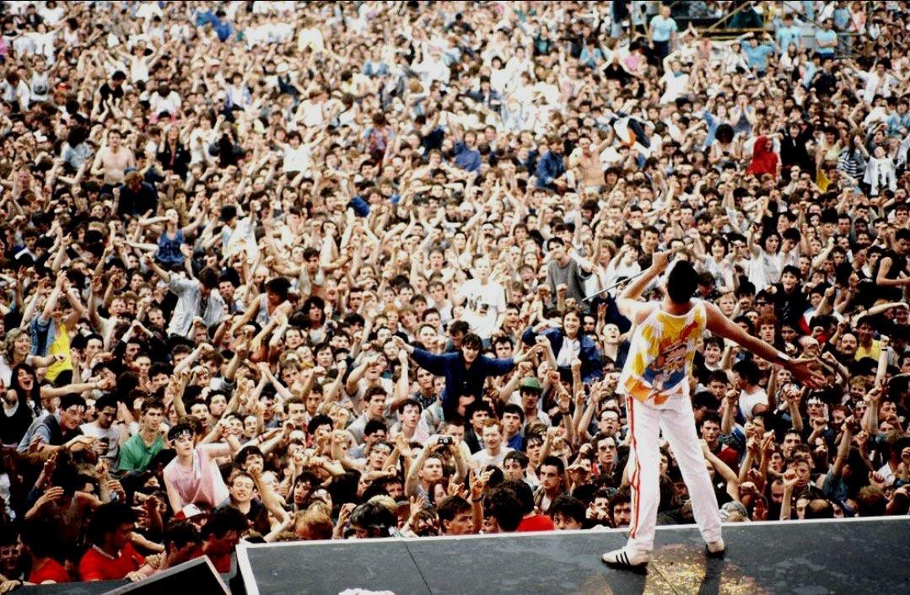

En marzo de 2025, el guitarrista Brian May dio una entrevista a Mojo en la que expresó optimismo respecto a la posibilidad de que Queen publique nueva música. May dijo que tanto él como el baterista Roger Taylor están trabajando por separado en sus estudios, desarrollando ideas que podrían convertirse en canciones completas. May comentó que ya hay “semillas” de canciones de Queen en proceso, aunque señaló que todo depende de si esas ideas logran madurar lo suficiente para sentirse digno de llevar el nombre de la banda. Él mencionó que no sabe si esas ideas verán la luz, pero que están dispuestos a explorarlas.
También se ha hablado de la colaboración de Queen con Adam Lambert como vocalista invitado en sus giras actuales, y se especula si en caso de haber nuevo material podría contar con su participación. Taylor y May han dicho en otras entrevistas que si sienten que tienen algo bueno, “por qué no”, lo lanzarían.
Este tipo de declaraciones causan expectativas entre los fans, ya que desde Made in Heaven (1995) la banda no ha producido álbumes originales con Freddie Mercury. Si bien hay bastantes elementos aún sin definir (qué canciones, cuándo, con qué formación), esta noticia representa una señal más de que Queen no ha cerrado del todo la posibilidad de volver a aportar música nueva al legado que han construido.
La posibilidad de nuevo material de Queen mantiene vivo el entusiasmo de sus seguidores en todo el mundo. Más allá de la incertidumbre, estas declaraciones muestran que la banda sigue creativa, explorando caminos musicales y abierta a sorprender a su público incluso después de cinco décadas de historia. Para los fans, la sola idea de escuchar canciones inéditas bajo el sello de Queen es motivo suficiente para mantener la expectativa y la ilusión.
